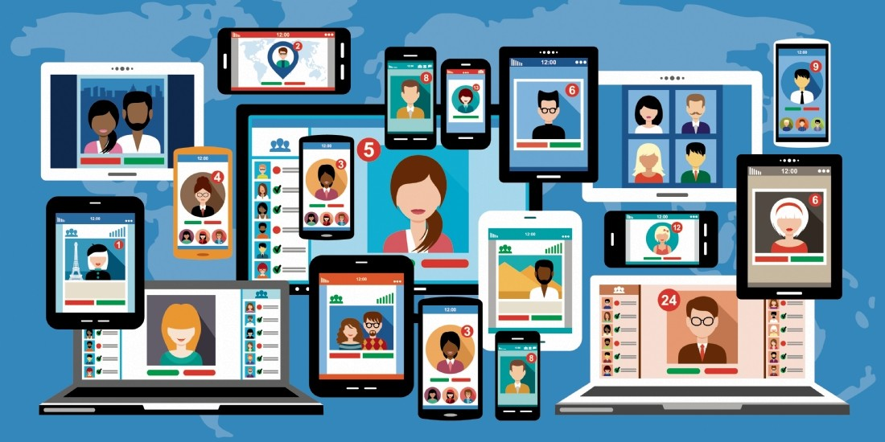

LES RESEAUX SOCIAUX
.
.
.
.
.
.
.
.
.
.
.
.
.
.
c'est quoi un réseau social?
En sciences humaines et sociales, l'expression réseau social désigne un agencement de liens entre des individus ou des organisations, constituant un groupement qui a un sens : la famille, les collègues, un groupe d'amis, une communauté, etc
D'où vient le terme réseau social? et à quoi sert exactement le réseaux sociaux?Réseau social vient du synonyme réseautage social un terme qui se rapporte sur l’ensemble des moyens virtuels. Ces moyens virtuels servent à relier des personnes physiques ou personnes morales entre elles. C’est grâce à internet qu'aujourd’hui toutes ces applications web existent, et qui permettent de constituer et d’entretenir un réseau social, tant pour échanger des informations que pour s’y mettre en valeur. Elles offrent à des personnes partageant des centres d'intérêt divers moyens pouvant faciliter, par exemple, la gestion des carrières professionnelles, la distribution et la visibilité artistique ou les rencontres privées.
Le début du concept réseau social
L’histoire des réseaux sociaux avait commencé en 1997 lorsque SixDegree.com fut apparu, qui est considéré comme le premier véritable réseau social, mais l’idée est apparu bien avant vers la fin des années 1970 ou deux passionnés d’informatique, Ward Christensen et Randy Suess, conçoivent le computerized Bulletin Board System en 1978. Ce system était le premier site qui permettait aux internautes de communiquer entre eux.
Bien que les réseaux sociaux nous permettent aujourd’hui de s’informer sur divers sujets, de communiqué avec ses entourages de se divertir, de s’ouvrir à d’autre cultures, de se cultiver et d’autres plein avantages mais n’oublions pas qu’il y malheureusement aussi des points négatives comme trouvées des fausses informations appelées aussi les fakes news, se faire arnaquer … mais pas qu’aujourd’hui comme tous les jeunes possèdent des réseaux sociaux, certains partagent des choses qui peuvent offenser certains spectateurs, ou être affronté à un harcèlement.
Des études montrent qu’aujourd’hui beaucoup de jeunes sont plus préoccupés par les réseaux que leurs études ou leurs véritable vie social, et passent plus de 2 heures sur les réseaux .
Courte vidéo explicative des dangersvoici quelques chiffre clés des réseaux sociaux pour mieux comprendre le tableaux ci-contre:- 4,48 sur 7,87 milliards d’habitant sont des utilisateurs actifs soit 56,8 % parmi eux ils sont 99 % à se connecter à partir d’un mobile. En moyenne un utilisateurs possèdent 6,6 comptes sur les différentes plateformes à l’échelle mondiale, et leur temps moyens passé sur les réseaux sociaux est de 2h24.
Tableau des tops 10 des réseaux sociaux dans le monde
| 2,895 milliards | |
| YouTube | 2,91 milliards< |
| Plus de 2 milliards | |
| 1,386 | |
| Facebook Messenger | 1,3 milliard |
| 1,242 milliard | |
| TikTok | 732 millions |
| 606 millions | |
| Douyin | 600 millions |
| Telegram | 550 millions |
Retour à l'accueil
MERCI d'avoir visité ce site!
CONTACT :
raniashelig@yahoo.com